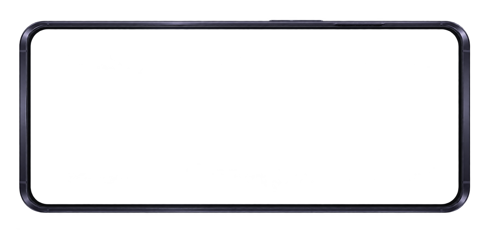

携帯端末 — 独立アプリのホーム試作
Claude Codeの配置案をベースに、アプリを一つずつ独立したアイコンにした比較版。旧ページ・素材は変更していません。

太陽盤を読み込み中
プロローグオルクス城・回廊

場所の画像を読み込めません。オルクス城・回廊


アプリを押して入口を確認できます。
背景は原作者が選んだ無地・四隅の星飾り案の素材試作です。場所・文章は比較用の見本、残金・名声は実データ未接続の「—」。謎アプリは開始時には無し。時遊び後の知らせが遊びに効く方針は決定済みですが、このページでは効果を発生させません。
端末フレームの採否は未決定。枠なしを初期表示にして見本と比較できます。Escapeで「画面だけ」の表示から戻れます。